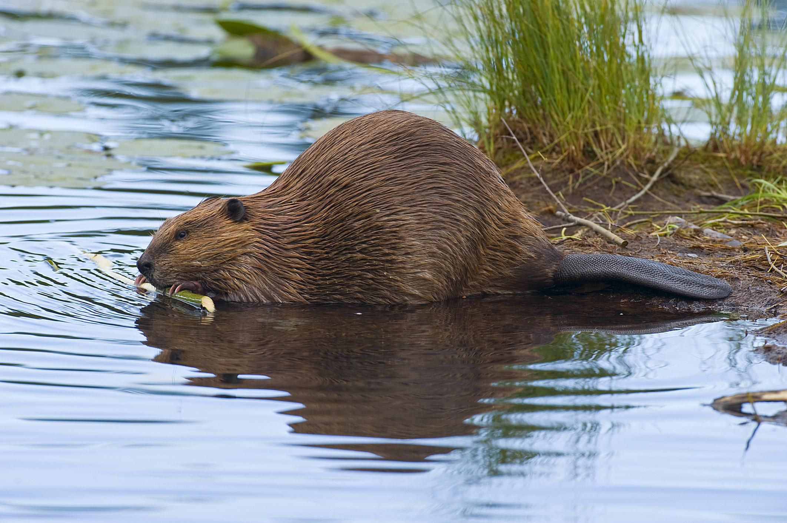
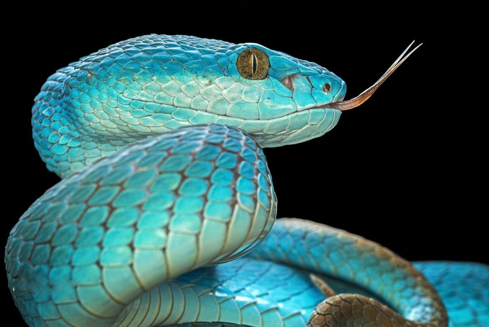
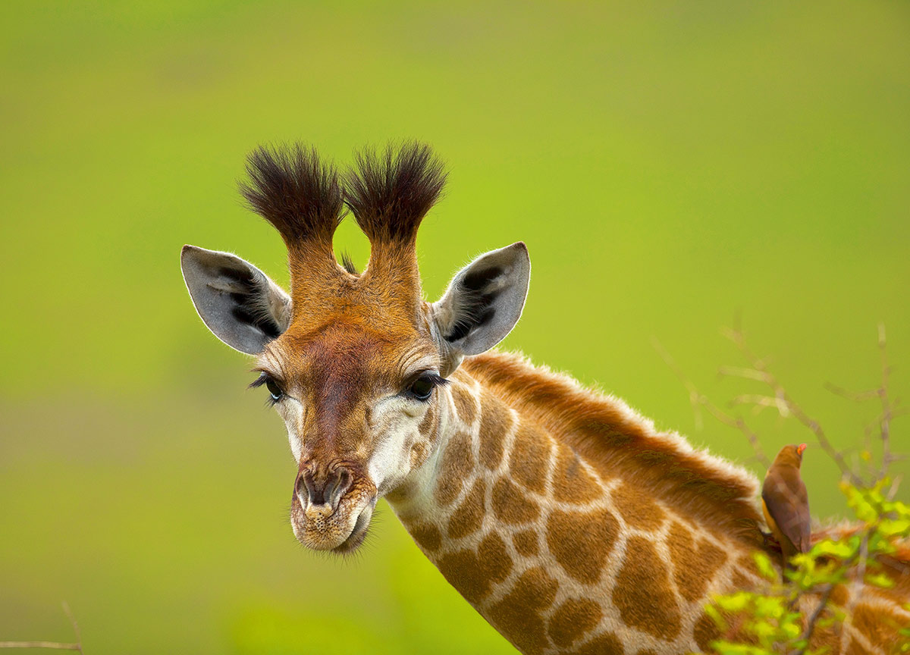
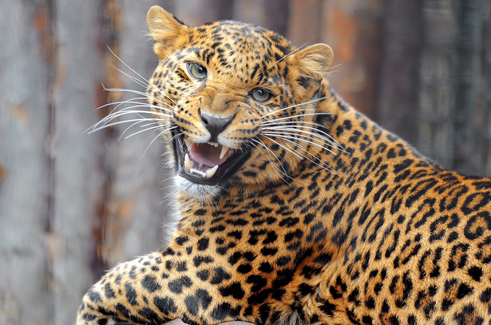

Бобр — крупный грызун, приспособленный к полуводному образу жизни. Длина его тела достигает 1—1,3 м, высота в плече — до 35,5 см, а масса — до 30—32 кг. Половой диморфизм выражен слабо, самки крупнее. Тело у бобра приземистое, с укороченными пятипалыми конечностями; задние значительно сильнее передних
Зме́и (лат. Serpentes) — подотряд класса пресмыкающихся отряда чешуйчатые. Змеи обитают на всех континентах, кроме Антарктиды и нескольких крупных островов, таких как Ирландия и Новая Зеландия, а также множества мелких островов Атлантического океана и центральной части Тихого океана[1]. Некоторые змеи ядовиты, но неядовитые представлены бóльшим количеством видов. Ядовитые пользуются ядом в первую очередь для охоты (чтобы убить жертву), а не для самозащиты. Яд некоторых видов достаточно силён, чтобы убить человека. Неядовитые змеи либо заглатывают добычу живьём (ужи), либо предварительно убивают (удушают) её (полозы, удавы). Самые крупные известные змеи из ныне живущих на Земле — сетчатый питон и водяной удав анаконда. Длина самых мелких змей из ныне живущих — Leptotyphlops carlae — не превышает 10 сантиметров[2]. Размер большинства змей не превышает одного метра[3].
Самцы жирафа достигают высоты до 5,5—6,1 м (около 1/3 длины составляет шея) и весят до 900—1200 кг. Самки, как правило, немного меньше и легче. Шея у жирафов необычайно длинная, и это несмотря на то, что у них, как и почти у всех других млекопитающих (за исключением ламантинов и ленивцев), лишь семь шейных позвонков. Большой рост увеличивает нагрузку на систему кровообращения, прежде всего в отношении кровоснабжения головного мозга. Поэтому сердце у жирафов особенно сильное. Оно пропускает 60 л крови в минуту, весит 12 кг и создаёт давление, которое в три раза выше, чем у человека. Тем не менее оно не смогло бы вынести перегрузки при резком опускании и поднятии головы жирафа. Чтобы такие движения не приводили к гибели животного, кровь жирафа гуще, чем у человека, и имеет вдвое более высокую плотность кровяных телец. Помимо этого, у жирафа имеются особые запирающие клапаны в большой шейной вене, прерывающие поток крови таким образом, что сохраняется давление в главной артерии, снабжающей мозг. Тёмный язык жирафа очень длинный и мускулистый: жираф может высовывать его на 45 см и способен захватывать им ветки. Голова жирафа Рисунок на шерсти состоит из тёмных пятен, выделяющихся на фоне более светлой базовой окраски, и у каждого жирафа индивидуален, как полосы у зебр или отпечатки пальцев у человека. Нижняя часть тела у жирафа более светлая и без пятен. Обычно голова жирафа, независимо от пола, увенчана парой покрытых кожей и шерстью рожек (оссиконов), утолщенных на концах. Но изредка встречаются особи с двумя парами оссиконов. А нередко посреди лба имеется своеобразный костный нарост, который по ошибке можно принять за ещё один — непарный — рог. Чёрные глаза окаймлены густыми ресницами, уши короткие. Жирафы обладают острым зрением, слухом и обонянием, что позволяет им заблаговременно замечать опасность. Хорошему обзору местности способствует, конечно же, и большой рост. Своих высоких сородичей жирафы могут видеть на расстоянии до километра.[прояснить] Жирафы способны быстро бегать и при необходимости пускаются в галоп, достигая скорости 55 км/ч, то есть на коротких дистанциях могут перегнать скаковую лошадь. Однако, как правило, ходят не спеша, передвигая одновременно оба правых копыта, затем оба левых. Из-за большой массы и тонких ног жирафы могут ходить только по твёрдой поверхности. Болотистых пространств они избегают, а реки часто представляют непреодолимую преграду для жирафов. Примечательно и то, что эти на первый взгляд громоздкие и неповоротливые животные умеют и прыгать, преодолевая даже барьеры высотой 1,85 м.
Обезья́ны[1][2][3], или «сухоносые» приматы[3] (лат. Haplorhini) — подотряд млекопитающих из отряда приматов.
Обезьяны отличаются по ряду признаков от другого подотряда приматов — полуобезьян. У гаплориновых приматов сухой нос и менее развитое чувство обоняния. Среди обезьян преобладают виды, рождающие одного детёныша. В целом этот подотряд считается более развитым в эволюционном отношении.
Обезьяны обитают в тропических и субтропических регионах Америки, Африки (за исключением Мадагаскара), в Гибралтаре, а также в Южной и Юго-Восточной Азии вплоть до Японии. Человек населяет все континенты за исключением Антарктиды (где не живёт постоянно, но постоянно присутствует).
У большинства обезьян белки глаз обычно чёрные, как и зрачки (у людей — белые, что контрастирует со зрачками). Обезьяны отличаются от полуобезьян дневным образом жизни, сложным поведением, всеядностью с уклоном в растительноядность. С этим связаны их многие морфологические особенности, например, сложно устроенный моз
Леопа́рд, или барс, или пантера[5] (лат. Panthera pardus) — вид хищных млекопитающих семейства кошачьих, один из пяти представителей рода пантера (лат. Panthera), относящегося к подсемейству больших кошек. В XX веке был внесён в Красную книгу МСОП, в Красную книгу России, а также в охранные документы других стран. Однако во многих странах Африки относительно высокая численность леопардов позволяет выделять ежегодно квоту на их добычу.
